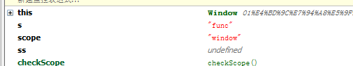

前言
先说说最近的工作吧，我刚进了一个新的团队，工作了快两周了，感觉新团队还是不错的，最重要的一点就是大家都在做事情，没人“偷懒”。
因为后端同事很多原来没有互联网开发经验，所以对前端的一些东西不是很熟悉，我开始还认为彼此配合可能会出问题呢，但是我是错误的！后端老大哥很照顾人的，至少最近的工作中，后端同事表现出来的友好与担当就是我应该学习的，而且后端同事对我很尊重，有几次都提出了要向我学习前端知识，说实话我感觉到了团队的温暖，也感觉到了自己的责任，所以还得加油呢！这个团队是很有前途的，这是一个好的开始。
然后，我开始担任着前端组长的角色，我认为我最近做的不够好，今天产品经理和组员聊天过程中，我突然意识到我已经不再是一个普通的程序员了，因为我事实上应该接受一个小组的任务，再与产品讨论确定具体的交互，然后与后端同事沟通数据接口，最后再分解给我的组员。
但是，我却一头埋在了自己的任务里面，这方面需要改进，好了进入今天的正题。
javascript的内容其实说多也多，说不多的话，今天就要说完了。。。当然这里先贴上我前段时间的一些研究，这里就不重复写了：
【初窥javascript奥秘之让人捉摸不定的this】你知道现在this指向哪里吗？？？
【初窥javascript奥秘之事件冒泡】那些年我们一起冒的泡
【初窥javascript奥秘之Ajax】简述下你所知道的Ajax？
以上博客的质量稍微要高一点，我觉得自己一个月能出两篇上述文章基本心满意足了。
javascript的作用域
javascript在执行时候有其执行环境，执行环境定义了变量或者函数有权限访问其他数据，决定了各自的行为。我们有时候也把它叫做执行上下午。
当代码在一个环境中执行时，会创建由变量对象构成的一个作用域链，我们的函数就有其作用域链，而且内部可以访问外部作用域链。
在javascript中，所有全局变量和函数都是作为window对象的属性或者方法创建的，所以我们创建变量时候一定要使用“var”，避免其全局化。
某个执行环境的代码执行结束后，该环境就会被销毁，比如还是内部变量在函数执行结束后就销毁了，当然闭包是个例外，我们后面说一下。
PS：那撒，这个扯那么多也没什么意义，我们通俗点来说吧：
编程语言中，作用域控制着变量与参数的可见性及生命周期，作用域的提出减少了变量冲突，提供自动内存管理，这就是作用域的意义。
javascript中的函数
javascript中的函数几乎无所不能，函数包含一组语句，用于代码复用、信息隐藏和组合调用。函数用于指定对象的行为，所谓编程不过是将需求分解为一组函数与数据结构罢了。。。
在javascript中函数就是对象，对象字面量产生的对象链接到Object.prototype，函数对象连接至Function.prototype（连接到Object.prototype）。
函数在创建时附加两个隐藏属性：函数上下文与函数行为的代码。
每个函数对象创建时也有一个prototype属性，该属性拥有一个constructor属性并且指向该函数的对象（所以我们完全可以将他当做对象用，但我一般不那么做。。。）
调用函数
函数调用有四种方法：
① 作为函数
② 作为方法
③ 作为构造函数
④ call与apply
关于这块我写着确实没有意思，因为之前也写过了，这里就不赘述了，大家可以去看看上面几篇。
闭包
闭包是javascript中一个很有意思的东西：
javascript函数的执行依赖其变量作用域，这个作用域是函数定义时决定的，函数对象可以通过作用域链互相关联起来，函数体内部的变量都可以保存在函数作用域内，这就是闭包了。。。
说多了我们也不能理解，上代码吧，代码才是世界通用语言呢：
var scope = 'window'; function checkScope() { var scope = 'func'; function func() { return scope; } return func(); } var s = checkScope();

看完代码，我们再来理一理闭包：
从技术角度来说，所有javascript函数都是闭包
他们都是对象，他们都关联到作用域链。
大多数函数作用域链再起调用时依然有效，但是当调用函数时闭包所指向作用域链和定义时不是同一个作用域链时，就变得有点奇妙了。
我们以上的代码就比较奇妙：
checkScope定义了一个局部变量与一个函数，函数返回了变量的值，随后将执行函数作为返回值。
在这里我们执行checkscope时候，其作用域链指向函数内部，所以得到了这个答案，现在我们对他做一点变形：
var scope = 'window'; function checkScope() { var scope = 'func'; function func() { return scope; } return func; } var s = checkScope()();
这样的话，情况又会有所不同了，这里回顾一下前面的知识：
javascript函数的执行到了作用域链，这个作用域链是定义函数时定义的
func函数在作用域内部，无论任何时候调用f，其内部的scope仍然有效，所以内部的scope是被保存下来了，其作用域被延长了。
var scope = 'window'; function checkScope() { // var scope = 'func'; function func() { return scope; } return func; } var s = checkScope()();
这个样子情况又会有所不同，以下这个例子出现了很多次了，我们再来看看：
function func() { var fs = []; for (var i = 0; i < 10; i++) { fs[i] = function () { return i; }; } return fs; } var f = func(); var s = f[5]();
这是一个比较经典的讲述闭包的例子了，上段代码定义了10个闭包，并将之存储于数组当中，然后他们都在同一个函数中定义，因此他们共享着变量i。
var f = func()，返回时，i的值为10，所有闭包都共享着这个10，所以每个函数都返回同一个数字。【关联到闭包的作用域链都是活动的】。
内存泄露
<div id="state"> <input type="button" value="提交试卷" id="ok"> </div> <script type="text/javascript"> var btn = document.getElementById("ok"); btn.onclick = function(){ //ajax操作 document.getElementById("state").innerHTML = '提交成功'; }; </script>
这段代码我们一定写过，他不是没有道理，的我们在点击ajax提交时候，为了防止用户重复点击，我们自然要隐藏或者删除按钮
但是，按钮倒是删除了，他的事件还在呢！若是不手动处理的话，在IE下就很有可能会导致内存泄露。
结语
哎，没感觉呢。。。。今天就到这里吧